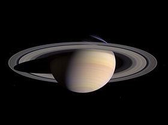
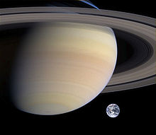

Saturn
Saturn, the sixth planet in the Solar System.

Saturn
Saturn is the sixth planet from the Sun and the second largest planet in the Solar System, after Jupiter. Named after the Roman god of agriculture, its astronomical symbol (♄) represents the god's sickle. Saturn is a gas giant with an average radius about nine times that of Earth.

Composite image roughly comparing the sizes of Saturn and Earth
A global storm girdles the planet in 2011. The head of the storm (bright area) passes the tail circling around the left limb.
HST UV image of Saturn taken near equinox showing both polar aurorae
Orbital Characteristics
- Aphelion
- 1513325783 km
- Perihelion
- 1353572956 km
- Orbital Period
- 10759.22 d
- Average Orbital Speed
- 9.69 km/s
Physical Characteristics
- Mean Radius
- 58232±6 km
- Mass
- 5.6846×1026 kg
- Surface Gravity
- 10.44 m/s²
- Axial Tilt
- 26.73°
©2014 Saturn Planetary Consortium